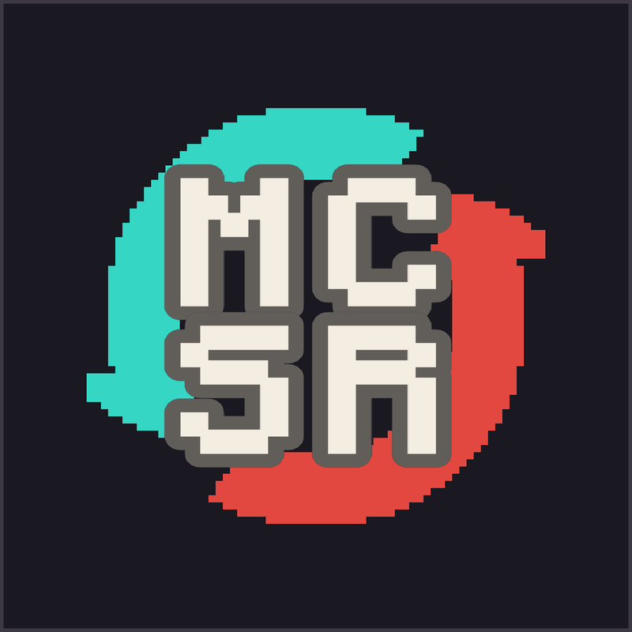

Last updated 14 October 2026.
MCSR Replayoffs is an open-source video pipeline (MIT licence), operated privately by one person for their own YouTube channel. It is not a hosted service and is not offered for public sign-in. There is nothing to register for and no account to create.
The source is published at github.com/Tymonoman/mcsr-vid under the MIT licence. If you run it yourself, you do so on your own hardware, under your own Google and Twitch credentials, and you are responsible for complying with the terms of every service it touches — including the YouTube API Services Terms of Service and the YouTube Terms of Service.
The software is provided as is, without warranty of any kind. The operator is not liable for any loss or damage arising from its use.
Published videos are compiled from publicly broadcast Twitch VODs of MCSR Ranked matches. Both players are credited by name in every video description. Any runner who does not want their footage used can ask for removal in a comment on any of the channel's videos, or in the project's GitHub issues. The video will be taken down and the runner added to the block list; see the privacy policy.
This project is an independent third party. It is not endorsed by or associated with MCSR Ranked, Twitch, YouTube, Google, or Mojang.
These terms may change; the date at the top of this page reflects the most recent revision.